Единый цифровой кабинет Университета Будущего · MGIMO×AI Challenge
Как я построил систему из ИИ-агентов, которая за девять дней сделала кабинет студента — от дизайн-системы до продакшна с автодеплоем.
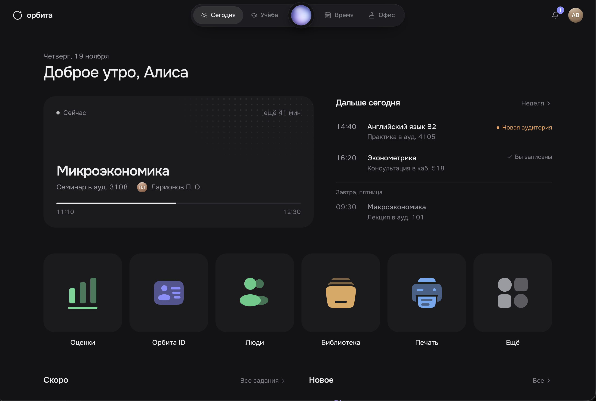
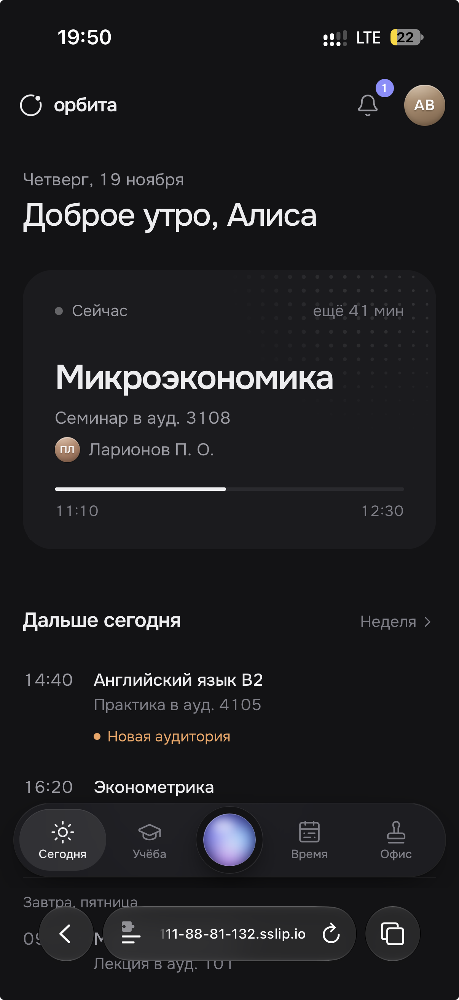
Орбита сделана с 14 по 22 ноября целиком ИИ-агентами. Я был в роли продакта и арт-директора: ставил задачи, принимал решения, отбраковывал варианты и проверял результат на телефоне. На середине пути самая сильная модель, выступив жюри, поставила нам 17 из 40. Ниже — как мы закрыли каждое её замечание.
Главное в процессе — не «скормить ТЗ нейросети», а выстроить систему: документы, из которых каждый новый агент узнаёт проект; правила, в которые превращается каждая найденная ошибка; автопроверки, без которых задача не считается сделанной; и параллельные треды, по одному на фичу.
Перед стартом я опросил однокурсников, что их раздражает в учебной жизни и чего не хватает. Повторялось вот что:
Плюс всё, что из-за разрозненности легко пропустить: новую оценку, перенос пары, смену аудитории, срок возврата книги.
| Боль | Раздел Орбиты |
|---|---|
| Всё в разных местах | Один кабинет и один вход. Орбита ID — QR, который заменяет студенческий, читательский и пропуск к принтеру |
| Оценки на листочках и в таблицах | «Учёба»: формула оценки по каждому курсу, «автомат», калькулятор «сколько нужно на экзамене», архив семестров, рейтинг |
| Справки через очередь | «Офис»: 25 видов заявок, трекер этапов как у посылки, готовая справка — PDF с QR-проверкой подлинности |
| Пропускаю важное | Центр уведомлений с уровнями важности и полосой срочного; новая оценка от преподавателя приходит сразу |
| Печать через флешку | «Печать»: отправил файл с телефона, приложил Орбита ID к любому принтеру |
| Не знаю, что есть в вузе | Клубы, библиотека с постаматом, бронь аудиторий, «Еда» с меню, ценами и КБЖУ, поиск людей |
| Некому сказать | «Красная кнопка»: жалоба, благодарность или предложение в приёмную ректора, анонимно по выбору |
Обязательное ядро ТЗ закрыто полностью: вход и профиль, расписание с переносами, успеваемость с сессией, заявки и справки со статусом, уведомления с новостями и дедлайнами.
| Инструмент | Для чего |
|---|---|
| Claude Code, модель Claude Opus 5.5 (effort high и medium) | Основной агент — «тимлид»: обсуждает решения, проектирует, пишет и проверяет код, ставит задачи субагентам |
| Claude Sonnet 5.5 (субагенты) | Объёмная однотипная работа по готовому плану: каркас приложения, вход, перенос утверждённых макетов в код. Делегировать простое я попросил с первого сообщения — ради экономии токенов |
| Claude Haiku 5.5 (субагент) | Самое простое — например, прочитать веб-страницу для исследования |
| Claude Fable 5.2 | Независимый аудит «глазами жюри» на середине разработки (см. этап 5) |
| bb | Среда для управления агентами. Каждый тред — отдельный агент со своей задачей, треды работают параллельно в одном проекте. bb с агентами работал 24/7 на моём сервере, а не на ноутбуке, поэтому разработка не останавливалась: задачи я ставил и с компьютера, и с телефона — запускал новых агентов, диктовал замечания, отправлял скриншоты с iPhone прямо в тред |
| Голосовой ввод bb (распознавание речи через Codex, OpenAI) | Длинные постановки задач я часто диктовал — так получалось подробнее, с контекстом, как живому разработчику |
| Скилл modern-web-guidance | Агенты по умолчанию пишут устаревший код: веб-платформа меняется быстрее, чем обновляются знания модели. Скилл от команды Google Chrome даёт им актуальные рекомендации — нативные <dialog>, popover, CSS вместо самодельного JS |
| Скилл impeccable | Набор принципов и проверок для дизайна интерфейсов уровня «арт-директора»: аудит, полировка, типографика, движение. Подключил, когда первая версия выглядела «собранной на коленке» |
| Playwright | Агенты сами запускают браузер, проходят сценарии, снимают скриншоты и проверяют безопасность |
| GitHub и GitHub Actions | Код и история: агенты коммитят и пушат после каждой законченной части. Каждый push автоматически выкатывается на продакшн |
Дизайн и контент тоже сделаны ИИ. Макеты — HTML-страницы, которые агент рисовал и сам смотрел на скриншотах. Логотип и все иллюстрации — SVG, нарисованные агентом. Иконки плиток — открытый набор Solar (CC BY 4.0), выбранный из восьми вариантов. Все вымышленные данные — 1800 студентов, 90 преподавателей, курсы, книги, меню столовых — сгенерированы агентами. Генераторы картинок не понадобились.
Стек: Next.js 16, React 19, TypeScript, Tailwind CSS 4, Prisma + SQLite, Argon2id.
Каждый новый агент начинает с нуля. Чтобы он не «изобретал» проект заново, всё важное лежит в файлах, и CLAUDE.md обязывает их прочитать.
| Файл | Что в нём |
|---|---|
CLAUDE.md | Точка входа: что прочитать, правила, как запускать и проверять, порты, коммиты. Менялся 26 раз — почти каждое правило выросло из конкретной ошибки |
docs/vision.md | Миссия, принципы, модули и журнал решений: каждое решение с датой и причиной (40 с лишним записей). Главный источник истины |
docs/ui-guide.md | Дизайн-система для агентов: токены, готовые компоненты с путями, раздел «Не делай», порядок работы над экраном |
docs/design.md | История дизайн-решений по каждому экрану |
docs/security.md | Вход, хеширование, сессии, разграничение доступа |
docs/notifications.md | Центр уведомлений: категории, уровни важности, правила «не пропустить» |
docs/licenses.md | Всё стороннее и на каком основании |
| Память агента | Мои предпочтения между сессиями: «без поясняющих фраз в интерфейсе», «коммитить по законченным частям», «сначала показать, потом коммит» |
Записан в ui-guide.md и соблюдался всеми агентами:
Одна фича — один тред в bb. На пике три агента работали одновременно: например, 22.11 параллельно делались «Красная кнопка», «Еда» и доработка «Аудиторий». Чтобы они не мешали друг другу, в CLAUDE.md разведены роли: порт 3000 — живое демо, его не трогает никто; для проверок — свои порты от 3101; после проверок свой сервер остановить, базу пересеять. Сборку и перезапуск демо делает только главный агент.
Правило: новый раздел — новый сценарий scripts/<раздел>-check.mjs. Сценарий сам поднимает сервер, входит под разными аккаунтами, проходит пользовательский путь и подделывает запросы: чужие ID, чужие заявки, неверные параметры. Перед каждым коммитом прогоняются все 21 сценарий — около 620 проверок. Агенты прогоняли их в фоне и сообщали по каждому: office 35/35 passed, study 60/60 passed.
Первым сообщением я задал правила игры — руководство, вопросы до действий, экономия токенов:
Промпт«работать будем под моим руководством, прежде чем что-то сделать спрашивай, для простых задач лучше вызывай агентов на моделях попроще… не хочу просто так потратить кучу токенов, а хочу грамотно сделать до дедлайна задачу»
Потом — порядок работы и главная идея:
Промпт«сначала… задам нарративы как я это вижу вообще, потом по дизайн системе решим, потом будем делать и в самом конце уже займемся деплоем… все подряд просто скормят тз хакатона какому нибудь агенту, получат нейрослоп-сайт и отправят его как решение, а мы реально заморочимся»
Промпт«если мы начнем делать какой то раздел типа оценки и начнем только в него углубляться то у нас закончится время и лимиты… сначала каркас, а потом будем прорабатывать»
Так появились принцип «сначала вширь, потом вглубь» и docs/vision.md — общая память для всех агентов. В тот же час родилась идея будущей главной вау-фичи:
Промпт«онбординг… когда человека приняли в универ… он заходит, а там красивые экраны: поздравляем, ты теперь студент… подтверди личные данные, загрузи фото»
Прежде чем сверстать хоть один экран, мы построили дизайн-систему. Иначе 20 с лишним разделов, которые делают разные агенты в разных тредах, неизбежно расползлись бы по стилю.
Планка. Навигация и внешний вид должны быть переизобретены, а не повторять типовой кабинет:
Промпт«если мы сделаем просто сайдбар и там будут куча пунктов, то это будет как у всех, нейрослоп… как будто самый крутой университет будущего поручил сделать ЛК компании типа Apple — а они не делают как у всех, они переизобретают и меняют привычки людей»
Референсы. Я собрал на Pinterest подборку интерфейсов и разобрал с агентом каждый: что именно цепляет. Задача — не скопировать, а передать настроение:
Промпт«на фото mantra нравится… вайб приятный, есть свободное место, красивый чистый интерфейс, шрифты, иконочки… теги цветные pending, in progress классно сделаны… не хочу прям черно-белый весь интерфейс, как будто светофильтр на экран наложили… на картинке lighthouse прикольный эффект с точками — вайб будущего»
Что получилось:
Систему записали для агентов. Токены цветов, типографика, раскладка, готовые компоненты с путями к файлам и раздел «Не делай» легли в docs/ui-guide.md. Новый агент читает его перед любой работой с интерфейсом. Через день я смог сказать:
Промпт«визуальный стиль… зафиксирован в проекте. То есть я могу, если что, новых агентов отправлять оформлять какие-то странички, и они сделают как надо»
Так и вышло: кабинет из 20 с лишним разделов выглядит как одно целое.
Проверка системы на первом экране. «Сегодня» прошёл четыре итерации, и я разбирал каждую по мелочам:
Промпт«сейчас просто страница главная выглядит как китайская магнитола… виджеты с дурацкими цветными иконками возле названия портят вообще все… надо, чтобы все смотрелось идеально, дорого, премиум, как у Apple, а не так что ты просто фигачишь все подряд на виджет расписания лишь бы инфы побольше»
Промпт«и хз зачем вообще поиск — если нужен поиск, значит тяжело что-то найти, а интерфейс такой не должен быть»
Четвёртая версия стала эталоном. Иконки плиток прошли такой же путь: пять стилей иллюстраций, изометрия, живые виджеты, восемь профессиональных наборов — пока не выбрали Solar.
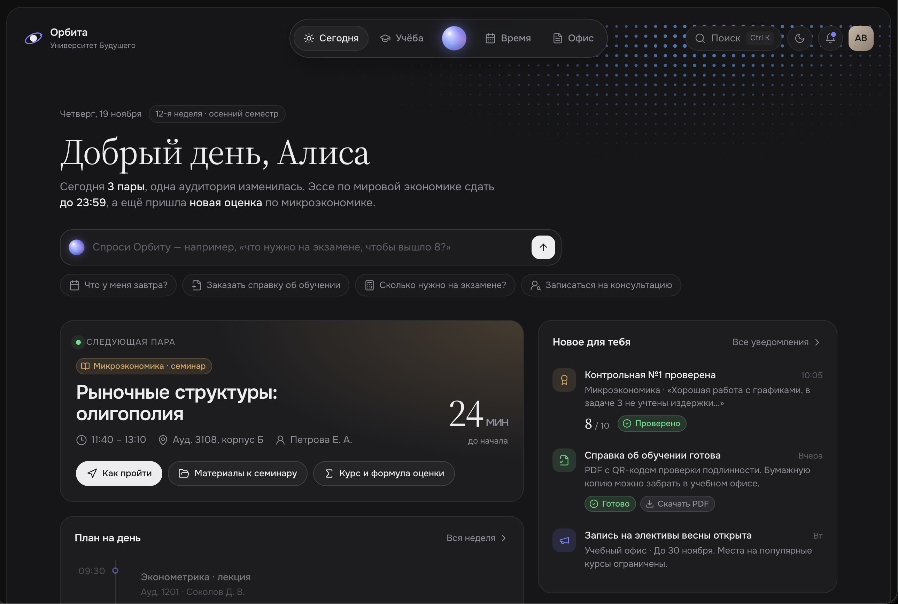
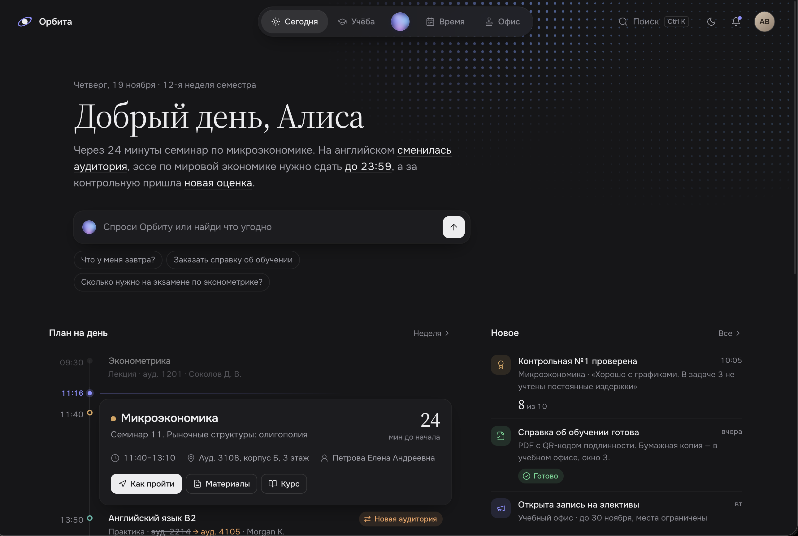
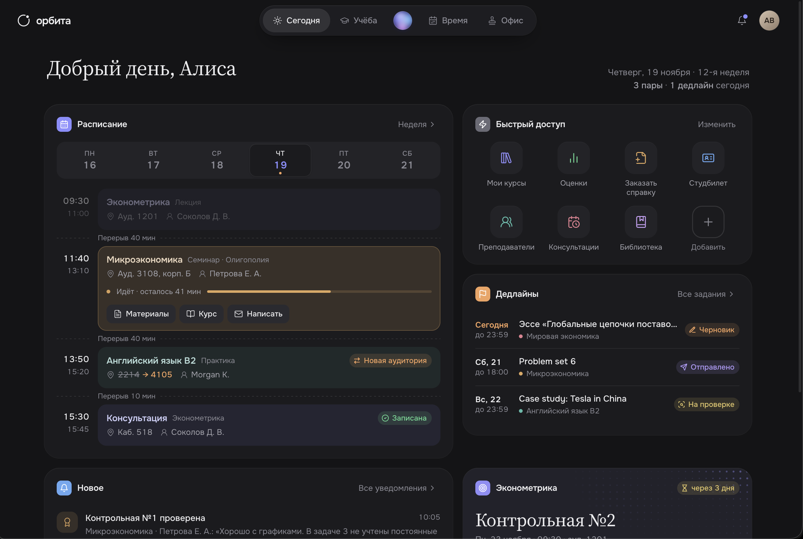
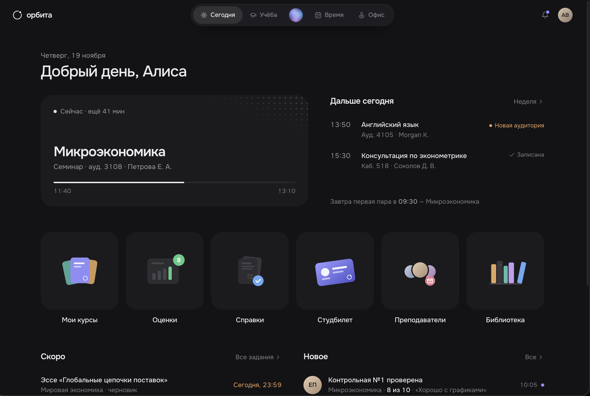
Эволюция «Сегодня» за один вечер 14.11: v1 (15:21, «не выглядит как кабинет самого передового университета») → v2 (15:36, «слишком много места сверху») → v3 (15:49, «китайская магнитола») → v4 (16:02, эталон).
Перенос макета в Next.js Opus отдал субагенту: «можешь эту задачу поручить модельке попроще, а сам проверить». Вход я сформулировал как требование к качеству, а не к реализации:
Промпт«по паролю сделай все хорошо: хеширование, соль, перец, ну короче самый лучший подход который есть, argon2id изучи и сделай»
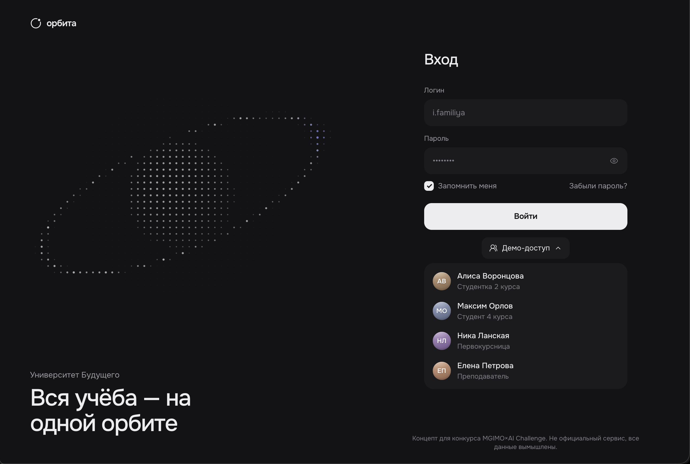
Экран входа с раскрытым списком демо-аккаунтов (текущая версия).
Каждый раздел — сначала макет, потом мои правки, потом перенос. Пример голосовой постановки по «Времени» (сокращено):
Промпт«вот в универе же есть сетка пар… хочется видеть: ага, сегодня у меня первая, вторая пара и четвёртая… консультации… препод выставляет слоты — в четверг вечером, во вторник с утра, — и ты можешь записаться, это не one to one, люди записываются, приходишь, там 10 человек»
Промпт«номер недели мы убираем… у нас университет будущего. Нам нужно даже не смотреть, как сделано в лучших университетах, а делать как было бы в идеальном»
Про «Офис» — сравнение, из которого вырос трекер заявок:
Промпт«мне нравится, что такой таймлайн и видно сразу, на каком этапе твоя заявка. Знаешь, напоминает трекинг посылок»
В тот же день справка стала настоящим PDF с QR-кодом, а по QR открывается публичная страница проверки подлинности.
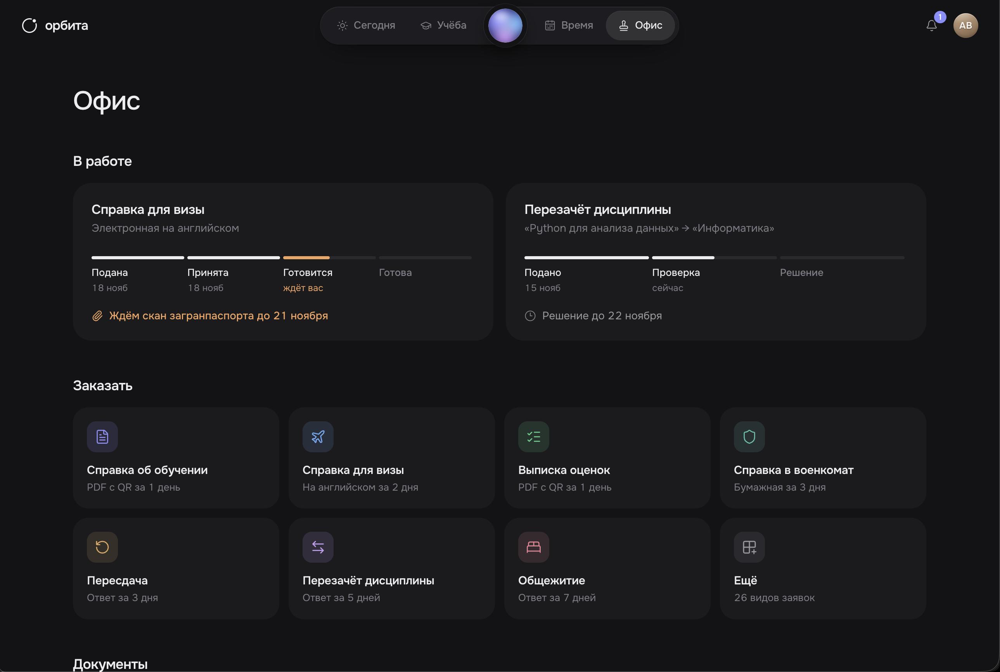
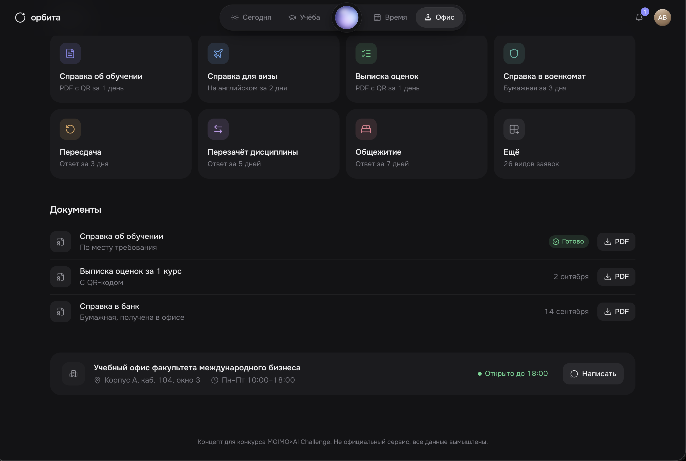
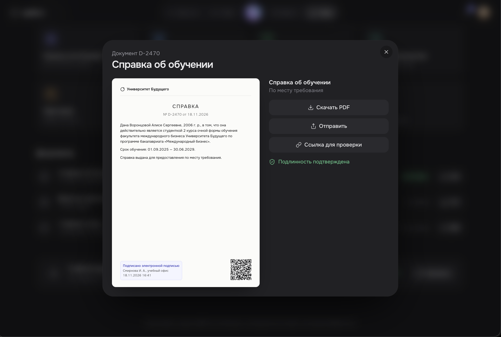
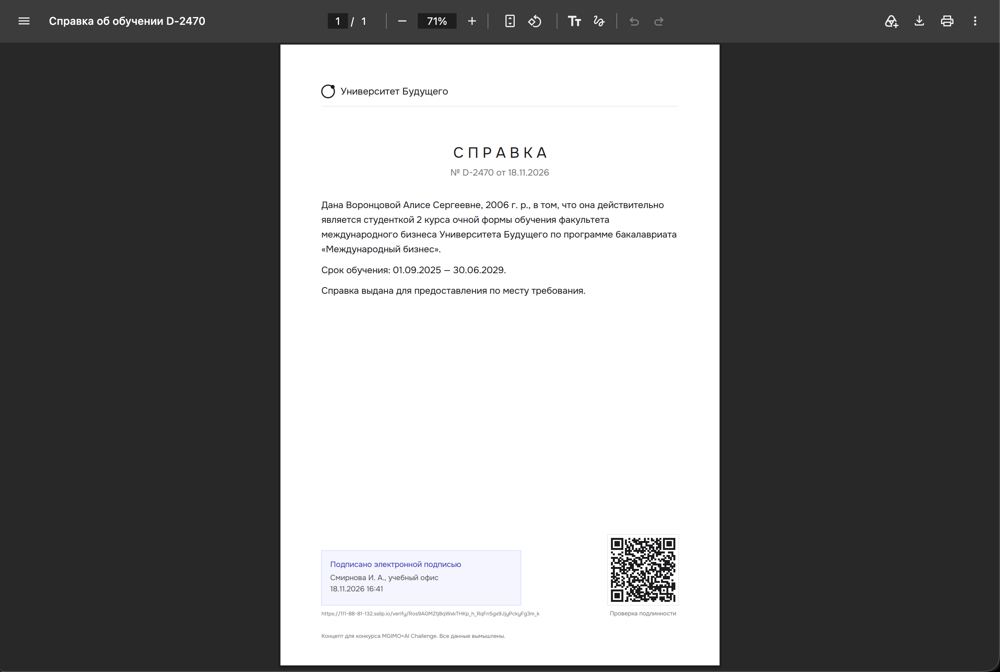
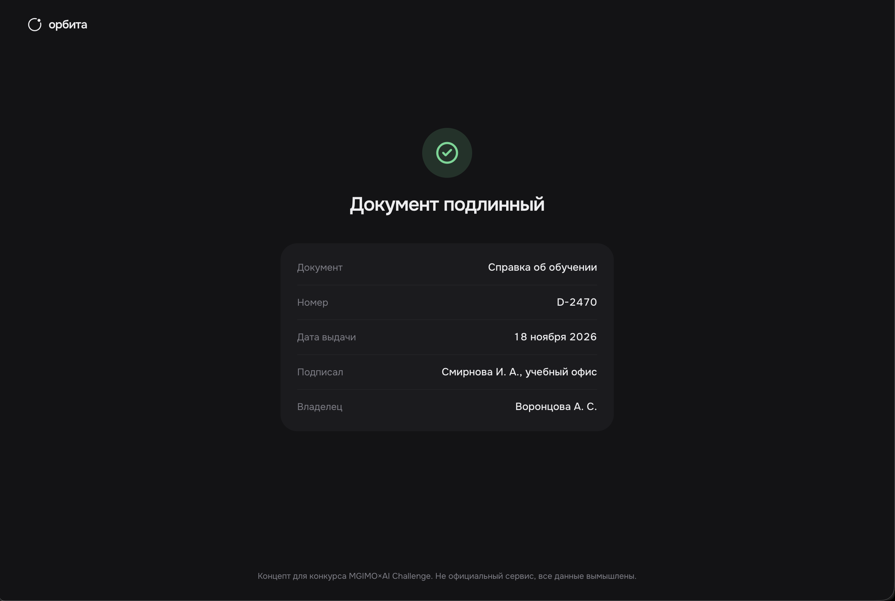
«Офис»: заявки с трекером этапов, готовая PDF-справка с QR и публичная страница проверки подлинности.
На второй день я попросил Opus составить задание для самой сильной модели, Claude Fable 5.2, — честно оценить проект глазами жюри. Промпт (сокращено):
Промпт«Ты — консультант команды на хакатоне… Пройди приложение как жюри: войди под всеми тестовыми аккаунтами, проверь на 360 px и на десктопе. Задача — НЕ писать код и НЕ менять файлы… Представь трёх экспертов (продуктовый дизайнер, разработчик, представитель деканата). Каждый ставит баллы по 4 критериям ТЗ и честно объясняет, за что снял… Что вырезать… План по дням до 22.11»
Вердикт был жёстким — 17 из 40:
| Критерий | Дизайнер | Разработчик | Деканат | Среднее |
|---|---|---|---|---|
| Проработанность идеи | 5 | 5 | 4 | 4,7 |
| Использование ИИ | 4 | 4 | 3 | 3,7 |
| Имплементация | 3 | 3 | 2 | 2,7 |
| Качество | 7 | 6 | 5 | 6,0 |
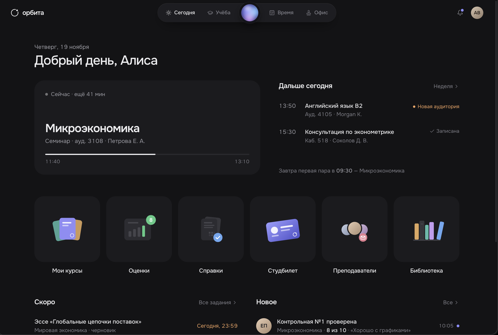
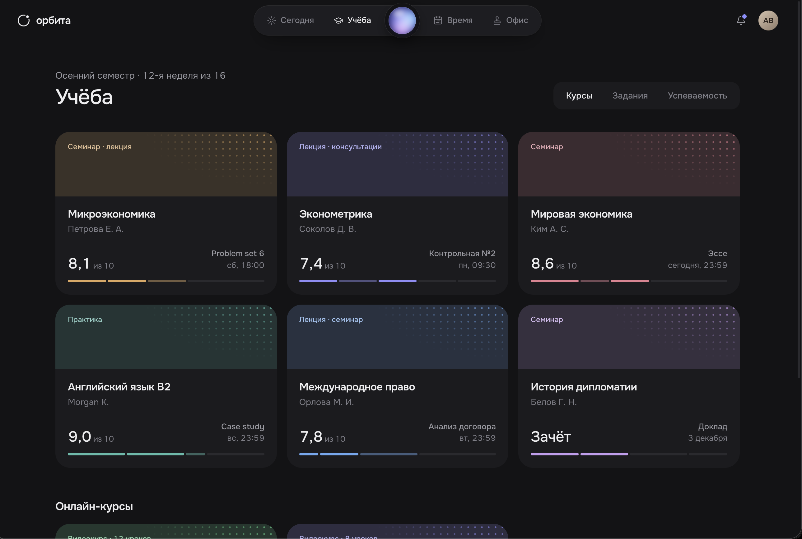
Так Орбита выглядела 15.11, когда её оценивало ИИ-жюри: «красивая витрина только для чтения».
«Красивая витрина только для чтения», «из пяти пунктов обязательного ядра полностью не закрыт ни один», «19 из 24 ссылок на „Сегодня“ ведут в #». Неприятно, но полезно. Я перестроил план, и каждое замечание закрыто:
| Замечание ИИ-жюри | Что стало |
|---|---|
| Ядро не закрыто, «Заявок и справок» нет | Ядро закрыто полностью; «Офис» заработал в тот же вечер — от заявки до PDF с QR |
| Ссылки ведут в никуда, в базу ничего не пишется | Каждая плитка и кнопка ведёт в рабочий раздел; заявки, сдача работ, брони, заказы книг сохраняются |
| Прошлых семестров нет | Архив семестров и «Диплом» (в журнале решений: «ответ на замечание жюри») |
| На телефоне док без подписей вверху экрана, мелкие зоны нажатия | Док с подписями внизу под большой палец, окна-шторки со свайпом, проверено на iPhone |
| Нет деплоя и документа о процессе | Прототип по ссылке и этот документ |
Разбор целиком лежит в репозитории: docs/jury-review.md.
Уведомления я не стал «просто делать», а попросил продуктовый анализ:
Промпт«проведи анализ… какие вообще могут быть там уведомления, категории и как правильно это все студентам показывать… надо продумать как сделать так, чтобы вероятность пропустить какое-то уведомление была около нуля»
Итог — отдельный документ docs/notifications.md с уровнями важности и правилом «прочитано ≠ решено», а по нему центр уведомлений.
Вечером я подключил скилл modern-web-guidance:
Промпт«посмотри проект и ссылку… если что-то можно, оптимизируй моменты, которые сейчас не по гайду, чтобы у нас было современно и быстро»
Агент перевёл окна на нативный <dialog>, меню — на popover, полосы прокрутки и «прилипшую» шапку — на CSS. Меньше самодельного JavaScript — быстрее и надёжнее интерфейс. А чтобы студенты с iPhone и Mac получали то же самое, в правила проекта вошла обязательная поддержка Safari.
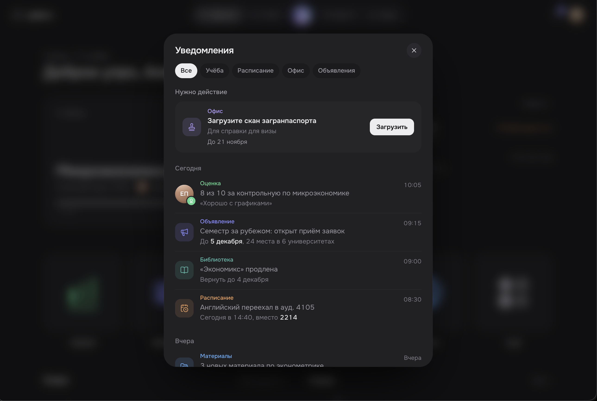
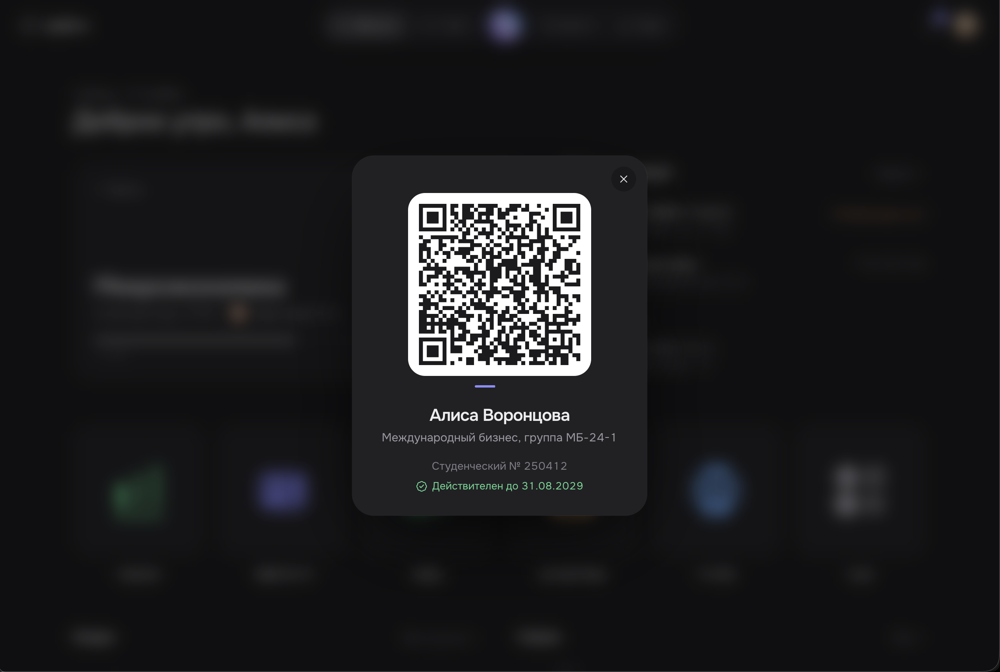
Центр уведомлений: полоса срочного и окно с категориями. Профиль и окно студенческого с QR.
Каркас готов — начинается проработка. Постановки становятся длиннее и точнее, потому что я уже вижу продукт как пользователь:
Промпт«задание — это то, что задают преподаватели… а контрольная же это не задание, это элемент контроля. Это я должен видеть в календаре и на странице курса»
Промпт«круто же, когда у тебя в библиотеке не сидит бабка, а у тебя всё автоматизировано: заказал, книга в пути, забрал в постамате по Орбита ID»
За эти дни появились: ИИ-помощник (Ctrl+K и сфера в доке), страница курса с формулой, «автоматом» и калькулятором, задания со сдачей файла, архив семестров и «Диплом», карточки преподавателей, рейтинг, клубы, конкурс мобильности, библиотека с постаматом, печать по Орбита ID, настраиваемые плитки «Сегодня» с перетаскиванием. QR Орбита ID стал «живым»: меняется каждые 10 секунд и подписан сервером, поэтому скриншот чужого QR ничего не даёт.
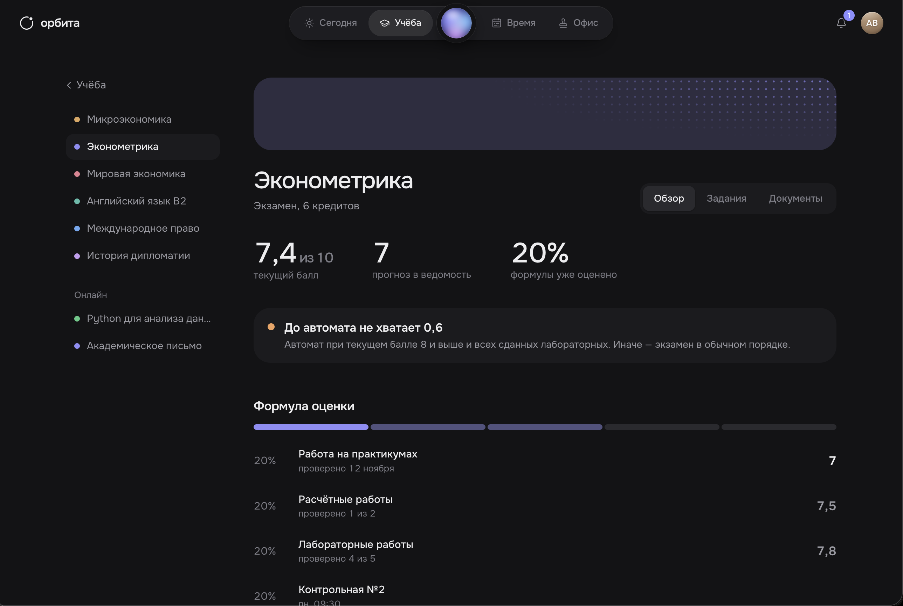
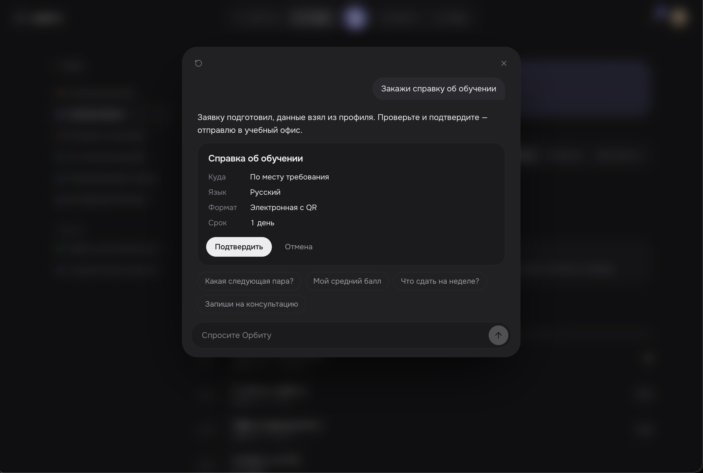
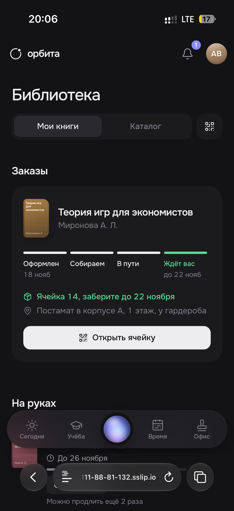
Страница курса: формула оценки, автомат, калькулятор. ИИ-помощник: заказ справки в чате. Библиотека: заказ в постамат.
Промпт«надо адаптировать все под мобилку… менюшки должны на мобиле открываться не в окнах, а на весь экран… чтобы на телефоне с кайфом можно было пользоваться»
Итог — док внизу под большой палец и окна-шторки со свайпом. Я проверял каждый экран на своём iPhone и присылал скриншоты с замечаниями: «снизу сфера по центру в квадрате каком-то, видишь», «над цветным баннером просто серое — можешь сделать, чтобы цвет был такой же».
Параллельно в соседних тредах:
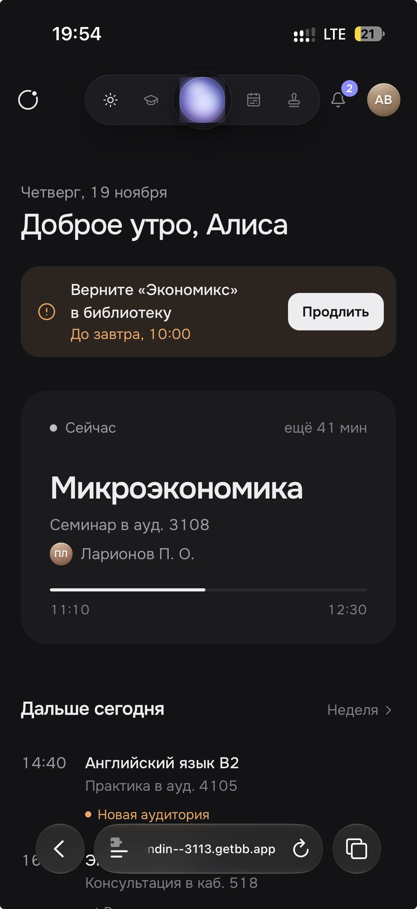
«Сегодня» на телефоне: 21.11 до адаптации и после — док под большой палец.
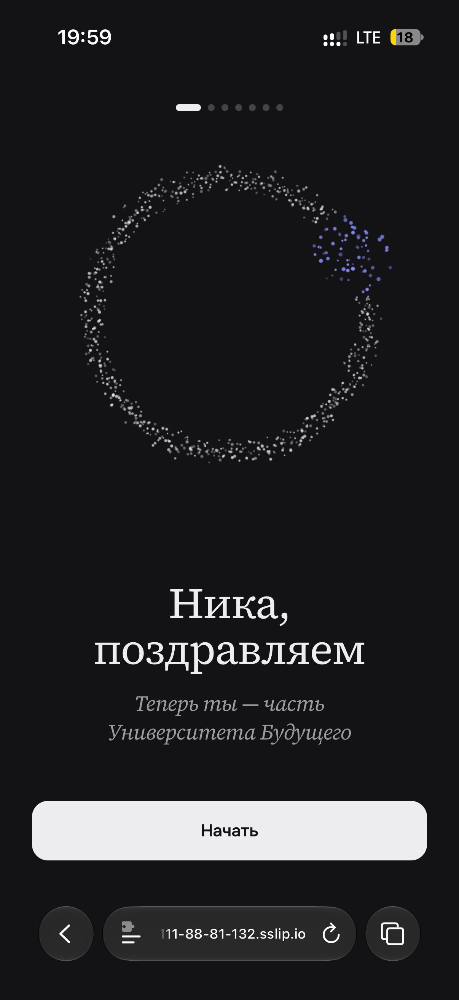
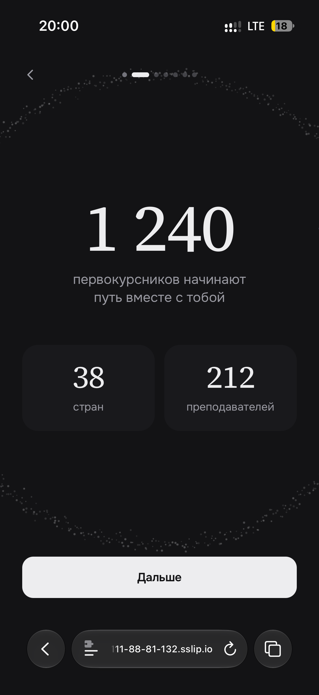
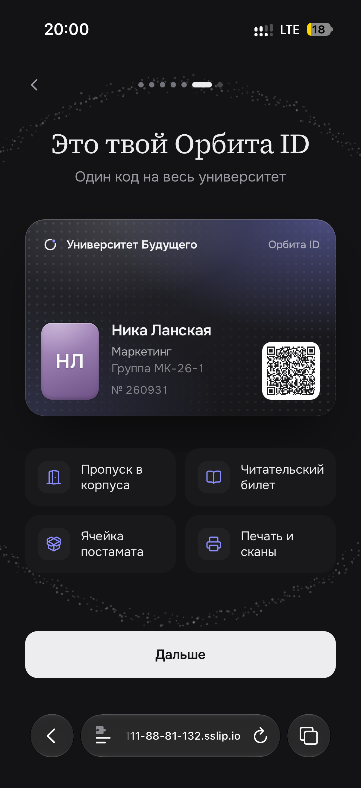
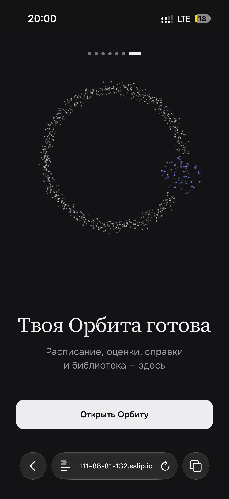
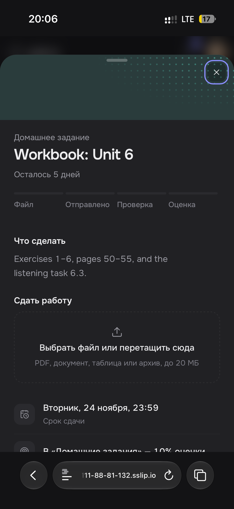
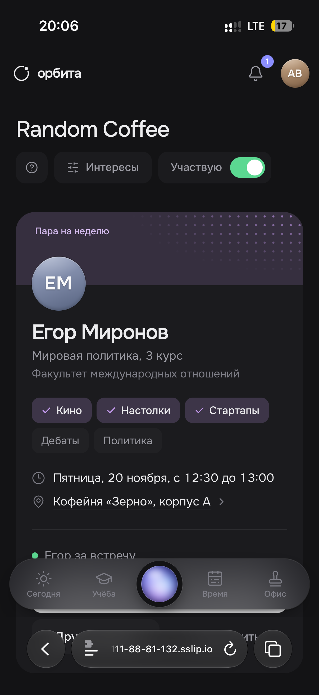
Онбординг первокурсницы: приветствие → выпуск Орбита ID. Шторка задания. Random Coffee.
Кабинет преподавателя: проверка работ, журнал, ассистенты-старшекурсники, слоты консультаций. Оценка, выставленная преподавателем, сразу приходит студенту уведомлением. Бронирование аудиторий «как в ИТМО и как переговорки в бигтехах». «Красная кнопка» «как в ВШЭ, но красиво, как у нас всё». «Еда» с загруженностью по переменам и КБЖУ. В конце — аудит безопасности и лицензий агентами и этот отчёт.
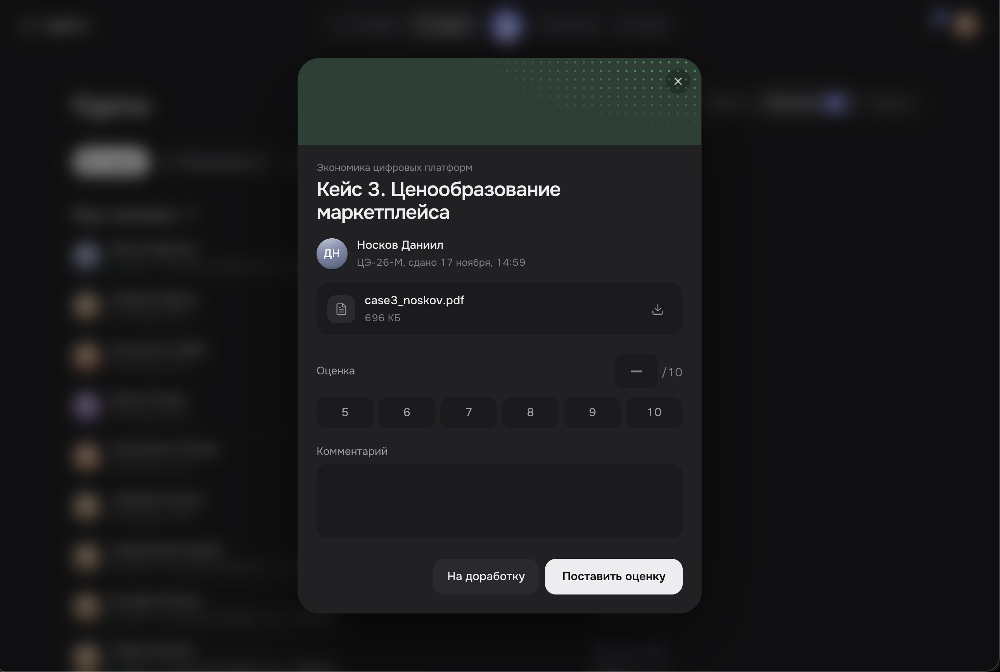
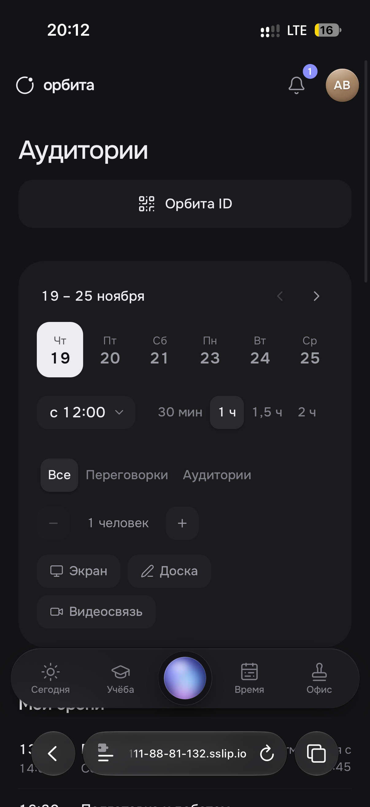
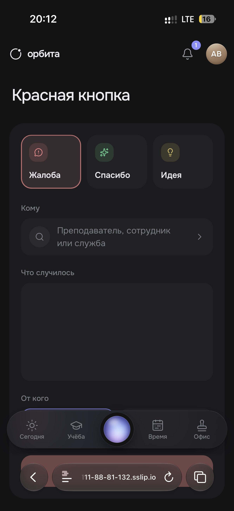
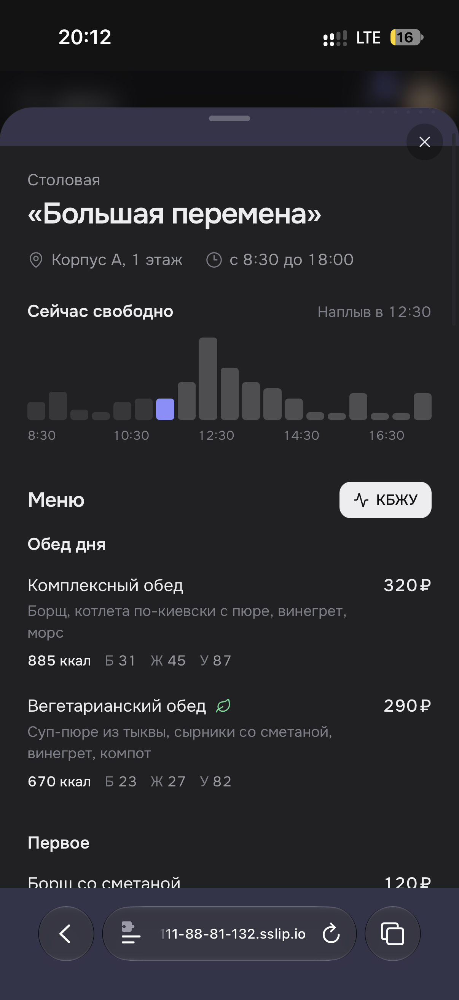
Кабинет преподавателя: проверка работы. «Аудитории» и «Красная кнопка». «Еда» с КБЖУ.
Деплой я тоже делал с агентом, но по-другому: в роли наставника-DevOps, а не исполнителя. Пускать агента на боевой сервер и показывать ему секреты я не стал:
Промпт«деплоить буду я… ты говори, что ставить, что как делать… нужно будет подключить GitHub, чтобы он автоматически пересобирался… и чтобы всё по красоте было сделано»
Промпт«давай ты по очереди говори, что куда ставить… а не так, что в одной команде всё сразу делаем»
Агент давал по одной команде, я выполнял и присылал вывод — секреты при этом показывал скрытыми. Когда GitHub Actions не смог зайти на сервер (Permission denied (publickey)), агент по логам sshd нашёл причину за один шаг: в настройки попал не тот ключ.
Что получилось:
main → GitHub Actions заходит на сервер по ключу, которому разрешена ровно одна команда — deploy.sh: подтянуть код, собрать, обновить демо-данные, перезапустить. Потом сам проверяет, что сайт отвечает;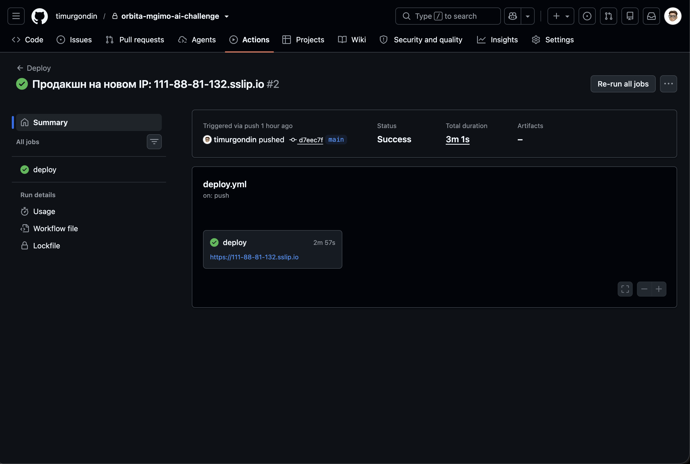
GitHub Actions: зелёный прогон Deploy с шагом Smoke check.
Ошибку недостаточно исправить — её надо сделать невозможной для следующего агента. Поэтому каждая заметная ошибка становилась правилом в CLAUDE.md, ui-guide.md или памяти агента.
| Что пошло не так | Как заметил | Какое правило появилось |
|---|---|---|
| Агент предложил общий лимит попыток входа на логин | Я: «так кто-то сделает бота, который все логины будет деактивировать» | Лимит на пару «логин + IP» — в security.md |
| Агент добавлял поясняющие фразы: «Используй логин и пароль, которые пришли после зачисления» | Я: «эти пояснения дешевят интерфейс» | Память агента и ui-guide.md → «Не делай»: поясняющих фраз нет |
| Метаданные склеивались через «·»: «Микроэкономика · 8 из 10 · …» | Я: «не очень хороший паттерн… изучи, как лучше дизайнить» | Правило в ui-guide.md, все экраны переделаны в тот же день |
Разделители через box-shadow загибались на скруглениях, «как стопка карточек» | Я на ревью | «Не делай» в ui-guide.md |
| Новые нативные окна в Safari вели себя не так, как в Chrome: страница под окном прокручивалась | Я спросил: «в Safari поведение не сломалось?» — агент сверил каждое окно и вернул фиксацию страницы | Правило в CLAUDE.md: всё одинаково в Chrome, Firefox и Safari, включая iOS; новые возможности — только с запасным путём |
| Агент коммитил каждую мелочь | Я: «стоит ли делать коммит прям на каждую мелочь» | Коммит — по законченной части (экран, фича) |
| Два параллельных агента правили один файл, и в коммит одного попали чужие правки | Агент сам сообщил об этом | По моей просьбе коммит разделён через revert, без переписывания истории: в нём остались только свои изменения |
Отдельно — ошибки, которые агенты находили сами. Пример: после сверки с гайдом агент написал «нашёл и исправил свою ошибку из прошлого раза: правило для липкой шапки в Chrome прокручивало страницу наверх при клике на колокольчик». Автопроверки тоже ловили регрессии: если один тред менял плитки «Сегодня», сценарий архива в другом треде падал (archive 48/50), и агент разбирался до коммита.
Это самое уязвимое место любого «навайбкоженного» проекта, поэтому я вынес его в отдельный документ для агентов (docs/security.md), а перед сдачей агенты провели аудит: проверили каждое серверное действие (18 файлов) и каждый адрес, который отдаёт файлы.
Как хранятся пароли. В базе нет паролей — только их «отпечатки» по алгоритму Argon2id, который рекомендует OWASP. Параметры выше минимума OWASP: 64 МБ памяти и 4 прохода на каждую проверку, поэтому перебирать пароли дорого даже на видеокартах. У каждого пароля своя случайная соль: два одинаковых пароля дают разные отпечатки. Есть и перец — секретный ключ, который хранится не в базе, а в настройках сервера. Даже если украдут базу целиком, без перца отпечатки бесполезны.
Как устроен вход.
Как студент видит только своё.
Секреты. Ключи — только в настройках сервера, файл с ними ни разу не попадал в git. Ключей к ИИ нет вовсе: помощник в прототипе работает на правилах по данным кабинета, без внешней модели.
Загрузки. Файл принимается, только если он действительно PDF, JPEG или PNG: проверяется содержимое, а не расширение. Размер — до 8 МБ.
Доказательство, а не обещание. В 17 из 21 автопроверки есть подделанные запросы: чужие ID, чужие заявки, неверные параметры, подмена роли. Все они прогоняются перед каждым коммитом.
Продакшн. Сайт работает под отдельным пользователем без прав root, наружу открыт только nginx с HTTPS. Ключ, которым GitHub заходит на сервер, умеет ровно одно — запустить деплой. Секреты сгенерированы на сервере и не покидали его.
Что осталось на следующий шаг: общий лимит попыток по IP и капча против перебора одного пароля по многим логинам.
ИИ писал код, тексты и данные. Решения и проверка были на мне:
n.lanskaya). Кабинет сам встречает нового студента: проверка данных, фото, выпуск Орбита ID, «Первые шаги».a.vorontsova, плитка «Орбита ID»). Один живой QR на весь кампус: постамат библиотеки, печать, отметка в забронированной аудитории. Отсканируйте его — увидите, что студенческий настоящий.e.petrova проверьте работу, под a.vorontsova увидите уведомление и новый балл.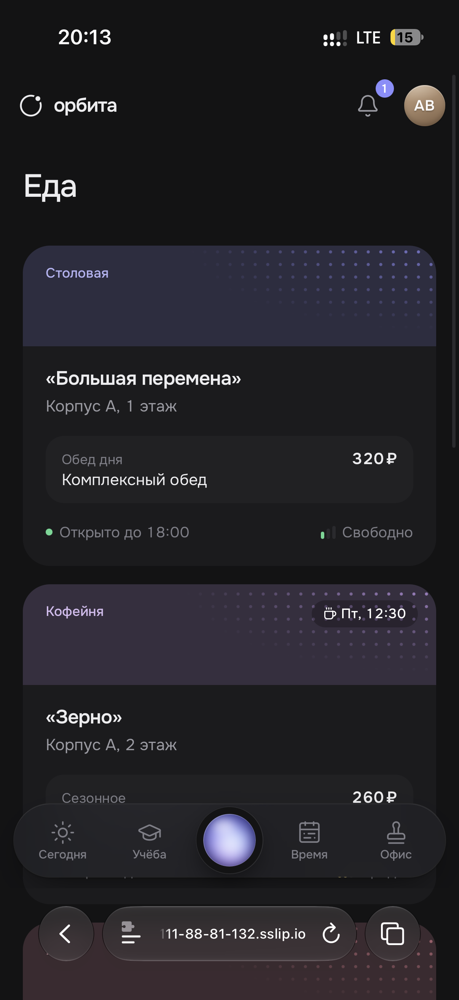
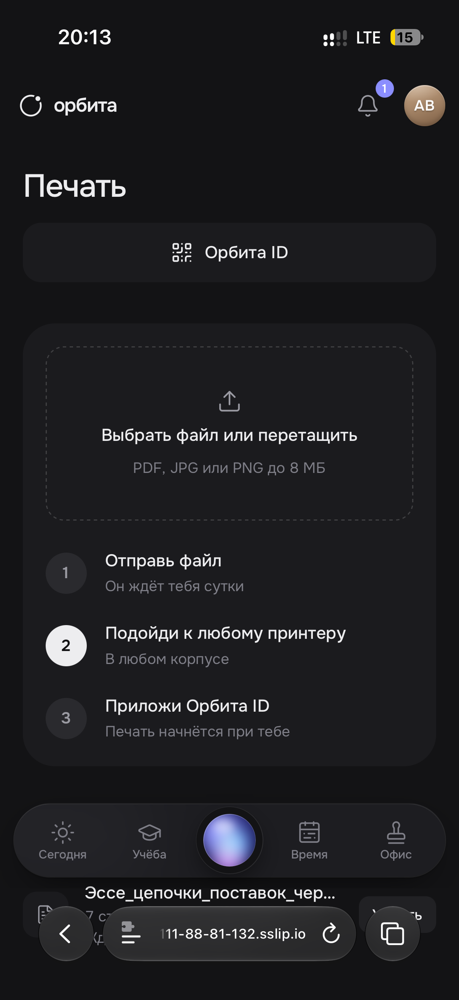
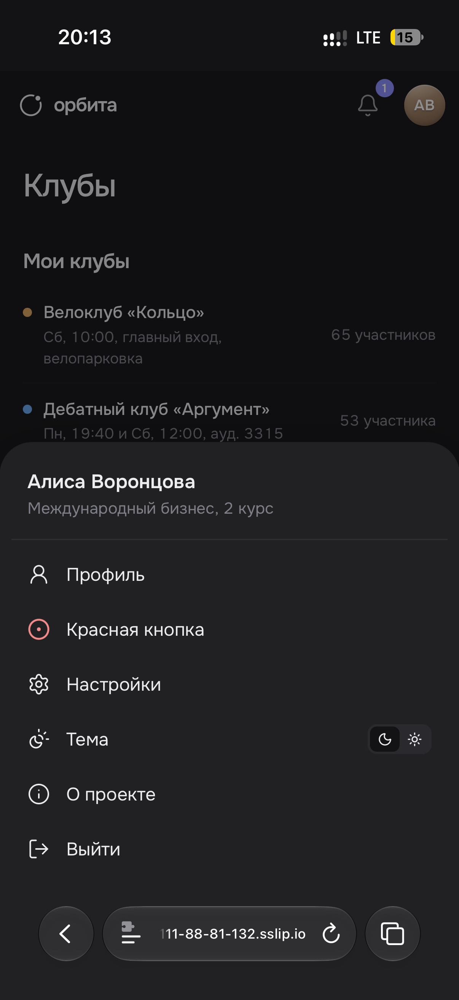
Орбита на телефоне.